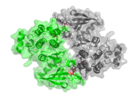
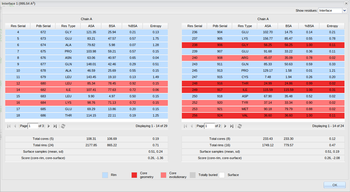
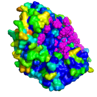

The EPPIC server
EPPIC (Evolutionary Protein-Protein Interface Classifier) aims at classifying the interfaces present in protein crystal structures in order to determine whether they are biologically relevant or not.
After submitting your protein structure as a PDB/mmCIF file or typing a PDB code you will get a view of all the protein-protein interfaces present in the crystal. We assess them based on one geometrical and two evolutionary criteria:
- geometry: number of core residues, indicating how good the packing in the interface is
- core-rim score: ratio of evolutionary signal (sequence entropy) of core residues versus rim residues
- core-surface score: a score (z-score like) of sequence entropy of core residues versus random samples of other surface residues
Each of these indicators casts a vote based on predefined score thresholds. The possible calls are:
- BIO, the interface is biologically relevant
- XTAL, the interface is only a crystal lattice contact
- NOPRED, there is not enough information available to make a decision (usually not enough sequence data)
You can see the actual scores for each of the indicators by hovering the mouse pointer
over the bio/xtal/nopred calls. Warnings may appear on the right side of the interfaces table
marked by the icon  . By hovering the mouse over
the icon, one can see different issues for which the prediction should be taken with care, e.g.
engineered residues at the core or rim, metal ions mediating the interface, atom clashes in the interface etc.
. By hovering the mouse over
the icon, one can see different issues for which the prediction should be taken with care, e.g.
engineered residues at the core or rim, metal ions mediating the interface, atom clashes in the interface etc.
From the 3 votes a final decision is made ("Final" column). BIO will mean that a majority of the criteria indicated a biological interface and likewise for XTAL. This is the final prediction column and what you need to look at first.
The main Interface table
The other columns in the interface table correspond to a few important parameters that describe the interfaces: the two chain codes of the partners (e.g. "A+B"), the Buried Surface Area upon formation (the sorting of the interfaces is based on this value), the crystal operator used to generate the second partner of the interface (e.g. "-X+1,Y-1/2,-Z") and the number of core residues in each side of the interface (e.g. "4+5")
Viewing the interfaces in 3D
 The thumbnails in the Interface table give a visual cartoon representation of the interfaces. By clicking on them one gets an interactive 3D view, depending on selected mode: as browser embedded Jmol viewer (no need for local viewer), as a PDB file downloadable to a local molecular viewer, or as PyMOL session file (.pse) to be opened in local PyMOL. In both the jmol and the pse modes the two protomers are represented as cartoons with interface residues also shown as sticks. Core residues from both protomers are shown in two different shades of red.
The PSE mode is particularly useful as it is already prepared with selections of the different parts of the interface and nicely depicted. Additionally the entropy values for each residue are written as b-factors in the .pdb and .pse files. Thus one can use the PyMOL "color by b-factor" functionality (spectrum command) to show the selection pressure pattern mapped on the 3-dimensional structure: blue colors indicate low entropies and colors toward reds correspond to increasingly higher entropies. The surface representation is particularly helpful here in order to see surface residues only.
The Residue Details window
 Clicking on the "Details" button in the last column of the main interfaces table will give you a detailed view of scores and information per residue, divided into two upper tables with all residue details and two lower tables with score details.
In the residue tables, only the residues at the interface are shown by default. To see all residues of the two chains one needs to switch the view with the drop down menu on the upper right of the residue details window.
The first 2 columns of the residue tables are the residue numbers: "Res Serial" for the numbering based on the SEQRES sequence from 1 to n, "Pdb serial" for the numbering as it appears on the ATOM lines of the PDB file. Four pieces of information are given for each residue: the total accessible surface area (ASA), the total buried surface area (BSA) upon formation of interface, the ratio of burial (BSA/ASA) upon formation of interface (the core/rim assignments are based on this) and finally the entropy value based on the multiple sequence alignments of homologs to the query sequence. More information about the homologs and alignments can be found on the Top Panel.
Below the residue details tables are the score summary tables with each of the core-rim and core-surface scores for each side of the interface plus average entropy of core residues, average entropy of rim residues and the mean entropy and standard deviation of the surface samples. Beneath that, the legend shows the color coding used for the residues in the residue tables.
Top panel: homolog sequences and alignments
The top panel contains additional information about the sequences and parameters used to run the evolutionary predictions. On the top left corner there is a line for each of the distinct protein sequences present in the protein structure. Each line is composed of 4 parts:
-

- The chain identifier(s): click on it to see the alignment of the chain to its reference UniProt sequence (based on the SIFTS mapping or found by blasting). Mismatching residues, normally engineered artifacts, are shown in red in the alignment.
- The UniProt identifier of the reference sequence: click on it to open its corresponding UniProt page.
- The number of homologs: click on it to download the multiple sequence alignment of all homolog sequences (FASTA format)
- The colored entropies icon: click on it to get a PyMol PSE file with the sequence entropy values (found through the alignment) mapped as colors onto the surface of the 3D structure. This is particularly useful in order to get a visual impression of the patterns of selection pressure on the surface of the particular chain. The spectrum function of PyMol is used in order to color the residues: the highest conservation appears in blue, transitioning to yellow and orange for lower conservation values. Residues that could not be aligned (for instance because they belong to an engineered tag) appear in red. Additionally magenta dots mark the core residues of the largest interface in which this chain participates. PyMol selections are also prepared in order to select other interfaces different from the largest one.
By clicking the download link on the bottom right corner of the Top Panel, one gets a single zip file containing the text output files with the results for all interfaces.
A note on assemblies
At the moment EPPIC classifies only pairwise interfaces in protein crystals. It does not consider interfaces in the context of the full biological assembly and does not group single interface calls into a biological unit call. We intend to implement that in future versions of the software. In the meantime please keep in mind that some interfaces may be called XTAL when they are actually BIO if considered in the context of the assembly: they are "induced" by the topology or point-group symmetry of the assembly.
Job identifiers
Every new job run on the server is assigned a unique job identifier, a long alpha numerical string that is only known by the user that submits it and that is very hard to guess. It is recommended that you give an email address while submitting so that you receive the URL with the job identifier in your inbox. Otherwise you will have to bookmark it or keep a record of it yourself. It is always possible to retrieve the job by using the URL http://www.eppic-web.org/ewui/#id/<my_job_id>. Whether the job is still running or already done, the URL will show its current status and automatically display the final results whenever it is finished. You can even share the URL with colleagues.
Please cite Duarte et al., BMC Bioinformatics 2012 if you use this service for your research.
Do get in contact with us if you want to report problems or send any kind of feedback.
With support from: